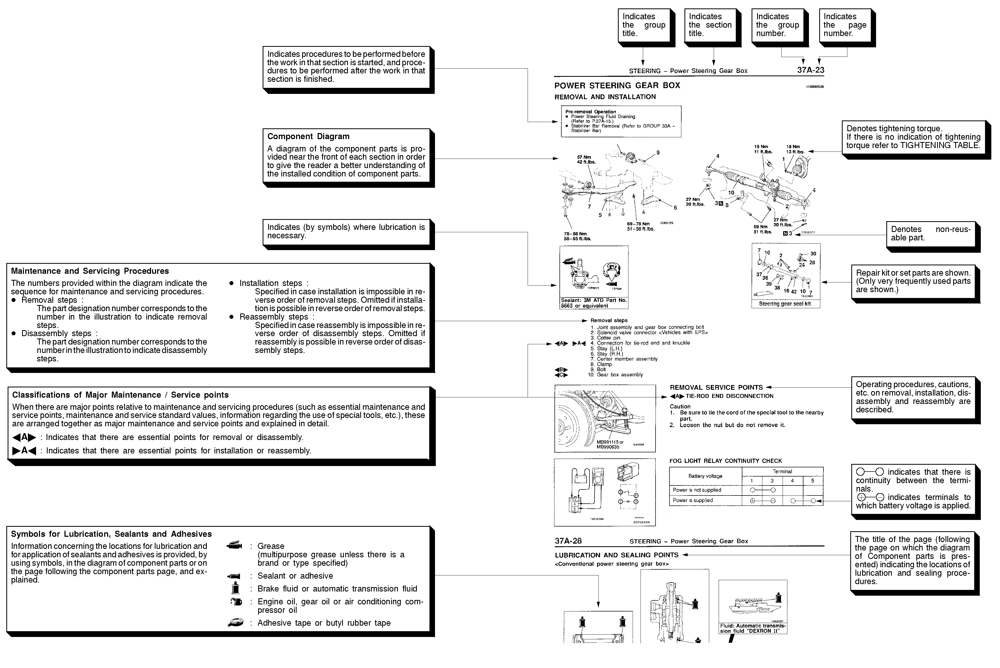

![[Previous]](https://mitsubishitechinfo.com/data/F24S/BUTTONS/fprevg.png)
![[Next]](https://mitsubishitechinfo.com/data/F24S/BUTTONS/fnextg.png)
HOW TO USE THIS MANUAL
MAINTENANCE, REPAIR AND
SERVICING EXPLANATIONS
This manual provides explanations, etc. concerning procedures for the inspection, maintenance, repair and servicing of the subject model. Unless otherwise specified, each service procedure covers all models. Procedures covering specific models are identified by the model codes, or similar designation (engine type, transaxle type, etc.). A description of these designations is covered in this manual under "VEHICLE IDENTIFICATION".
ON-VEHICLE SERVICE
"On-vehicle Service" are procedures for performing inspections and adjustments of particularly important locations with regard to the construction and for maintenance and servicing, but other inspections (for looseness, play, cracking, damage, etc. ) must also be performed.
SERVICE PROCEDURES
The service steps are arranged in numerical order. Attention must to be paid in performing vehicle service are described in detail in SERVICE POINTS.
TERMS DEFINITION
STANDARD VALUE
Indicates the value used as the standard for judging the quality of a part or assembly on inspection or the value to which the part or assembly is corrected and adjusted. It is given by tolerance.
LIMIT
Indicates a maximum or minimum value, the part or assembly should be kept within, in order to be functional. This value is established outside the standard value range.
REFERENCE VALUE
Indicates the adjustment value prior to starting the work (presented in order to facilitate assembly and adjustment procedures, and so they can be completed in a shorter time).
CAUTION
Indicates the presentation of information particularly vital to the worker during the performance of maintenance and servicing procedures in order to avoid the possibility of injury to the worker, or damage to component parts, or a reduction of component or vehicle function or performance, etc.
TIGHTENING TORQUE INDICATION
The tightening torque shown in this manual is a basic value with a tolerance of ą 10% except the following cases when the upper and lower limits of tightening torque are given.
(1)The tolerance of the basic value is within ą 10%.
(2)Special bolts or the like are in use.
(3)Special tightening methods are used.
SPECIAL TOOL NOTE
When the MMC special tool is described, please refer to the special tool cross reference chart, which is located at the beginning of each group, for a cross reference from the MMC special tool number to the special tool number that is available in your market.
MODEL INDICATIONS
The following abbreviations are used in this manual for classification of model types.
M/T : Indicates the manual transaxle, or models equipped with the manual transaxle.
A/T : Indicates the automatic transaxle, or models equipped with the automatic transaxle.
MFI: Indicates the multiport fuel injection, or engines equipped with the multiport fuel injection.
Turbo: Indicates the engine with turbocharger, or models equipped with such an engine.
Non-turbo: Indicates the engine without turbocharger, or models equipped with such an engine.
FWD: Indicates the front wheel drive vehicles.
AWD: Indicates the all wheel drive vehicles.
ABS: Indicates the anti-lock braking system or models equipped with the anti-lock braking system.
EXPLANATION OF MANUAL CONTENTS
